Download, find and read web novels anywhere.
NovelDB saves novels from npia and 1,000+ other sites as EPUB, TXT, PDF or CBZ. Search every site from one catalog, queue whole series, and read what you saved in a built-in library. On Windows, macOS, Linux, Android and iOS.
No account needed. Your sign-ins stay on your device.
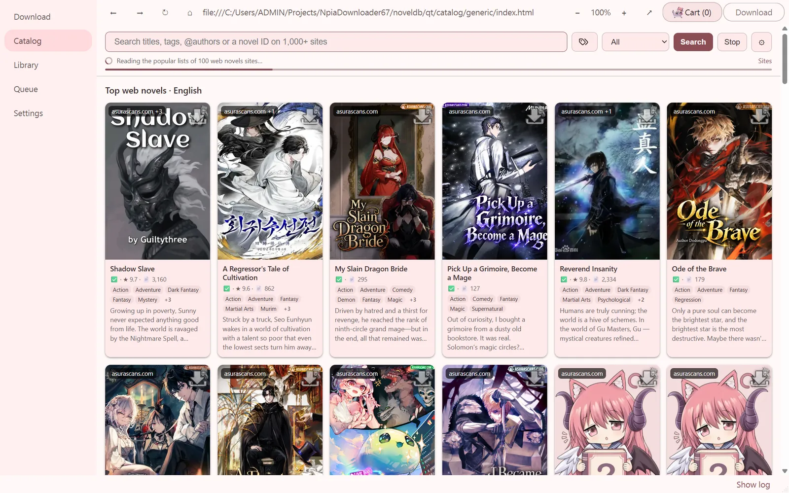
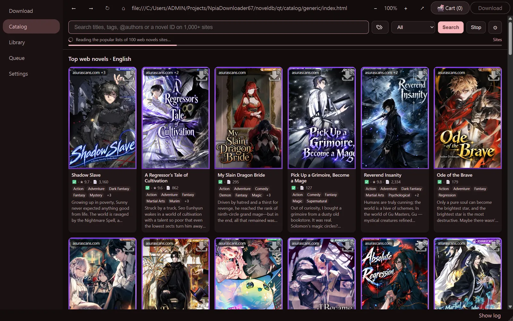
One window for downloading, browsing and reading.
Five pages: Download, Catalog, Library, Queue and Settings. These screenshots are the real app, captured from a running copy.
Download
Paste novel links, npia IDs or Title,ID lines, one per line, and pick the formats you want. A live log sits beside the form.
- EPUB, TXT, PDF and CBZ, with tags, author and synopsis written into the book
- Chapter ranges, skip paid chapters, number chapters, generate on stop
- WebP, AVIF, PNG or JPEG image compression, and a size target for the whole book
- A link cart that collects books from the Catalog for one batch
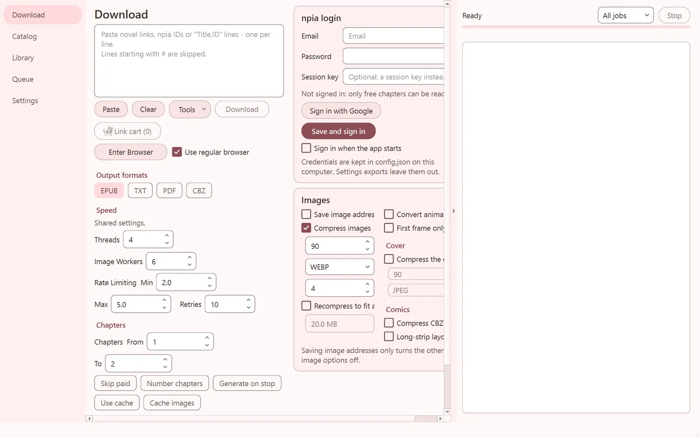
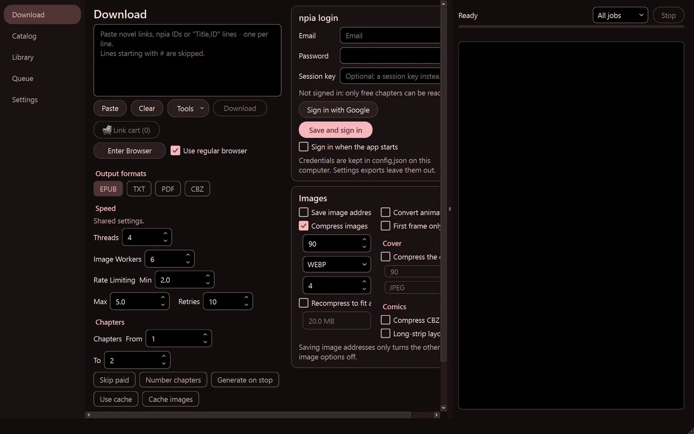
Catalog
Search titles, tags, @authors or a novel ID across more than a thousand sites at once, or open the popular lists. Every card has a download button, and books go to the cart in one click.
- Top web novels by language, with ratings, chapter counts and tags
- Tag search across the NovelDB database and the sites' own tags
- Read a chapter right away, before you download anything
Library and reader
Everything you download lands on a cover shelf. Open a book for its synopsis and chapter list, then read it in the app with your own theme and text size. Nothing is downloaded again: the reader opens the EPUB file.
- Search by title or author, sort by newest, page through hundreds of books
- EPUB, TXT folders and PDFs of one book shown together
- Contents panel, chapter by chapter navigation, light and dark reading themes
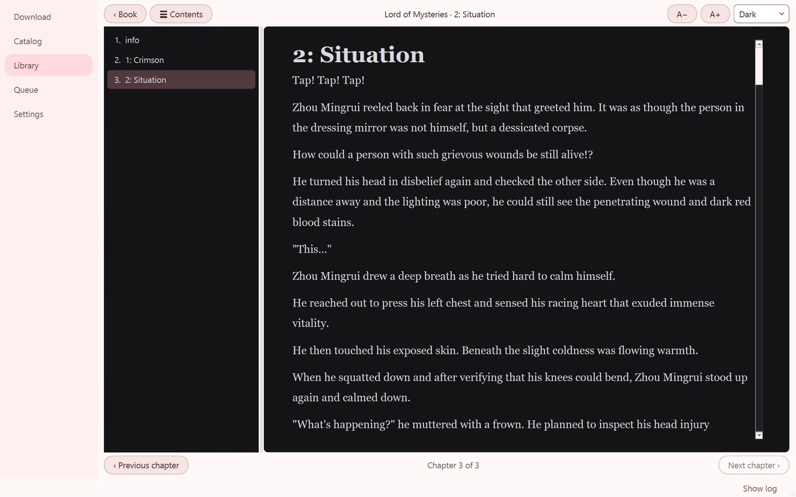
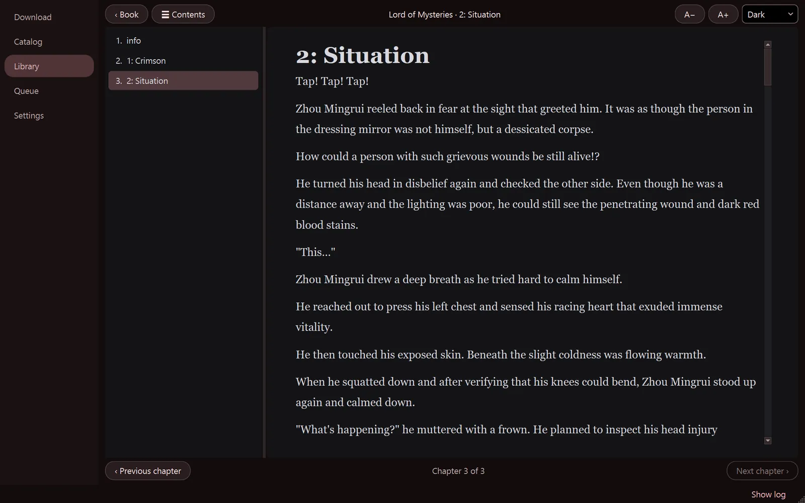
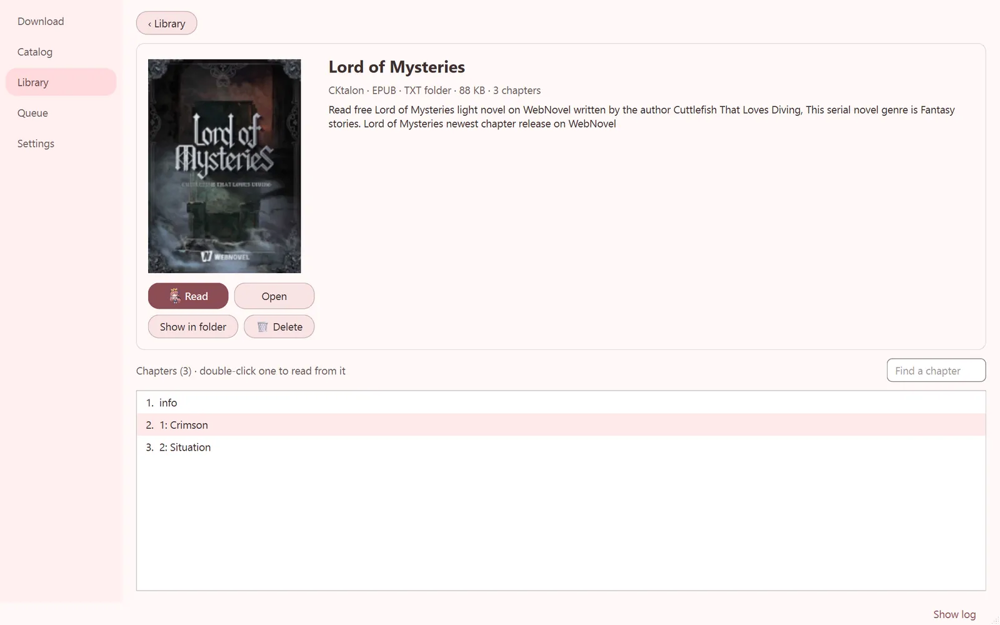
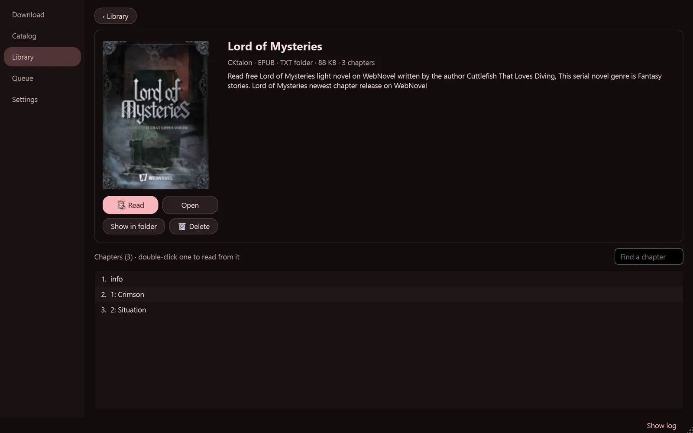
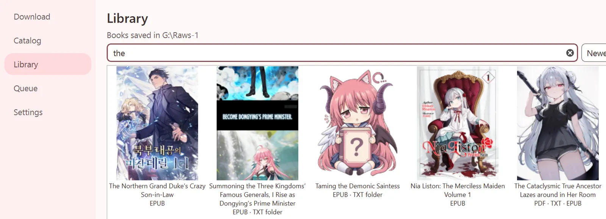
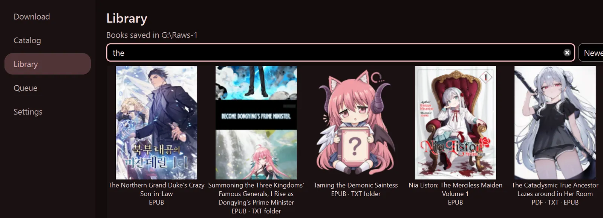
Queue and settings
Downloads run in a queue you can pause, stop and resume after a restart. Settings keep per-source overrides, saved sessions, the site engine order, uploads and app updates in one place.
- Several downloads at once, with retries and rate limiting per source
- Upload finished books and copy a share link
- Light and dark themes with three accents, and display scaling for any screen
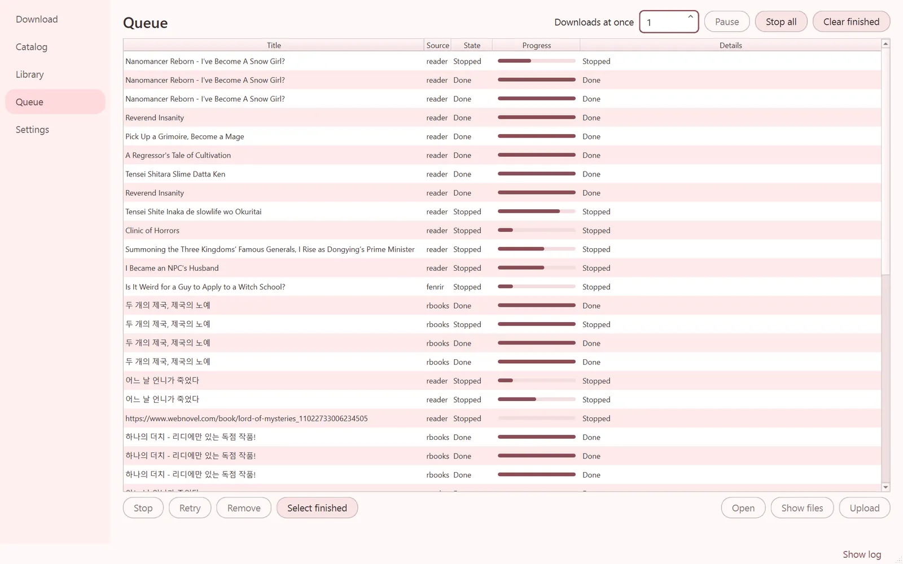
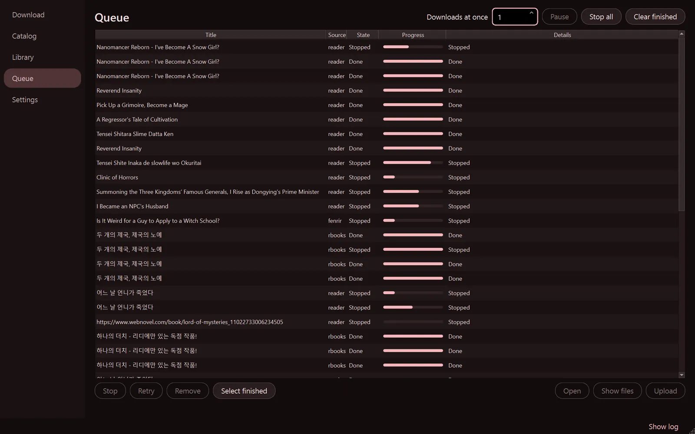
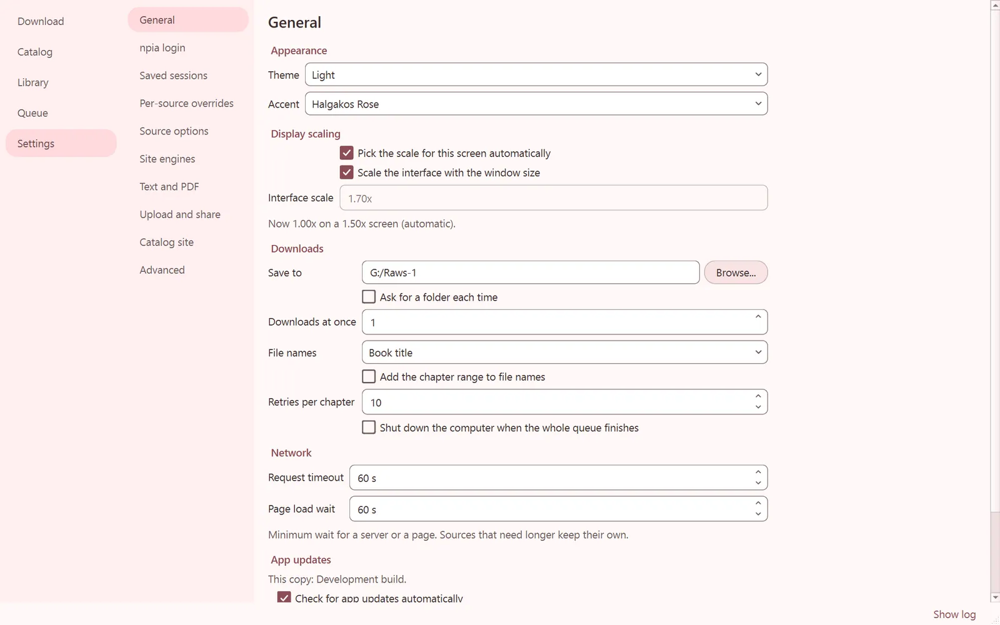
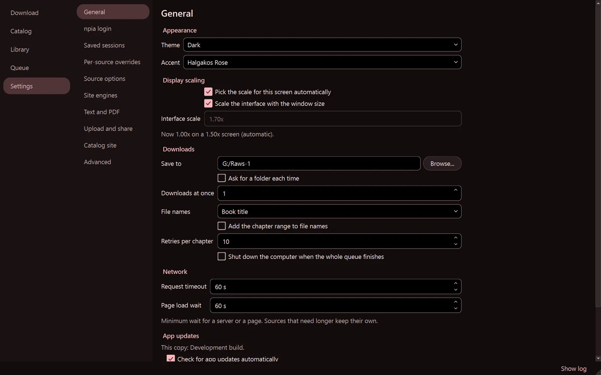
The same downloader in your pocket.
Native apps for Android (Kotlin, Jetpack Compose) and iOS (Swift) with the same Catalog, sources and settings. A settings file exported on one app imports on the other, and both import the desktop config.json. Screenshots: the Android release on an emulator.
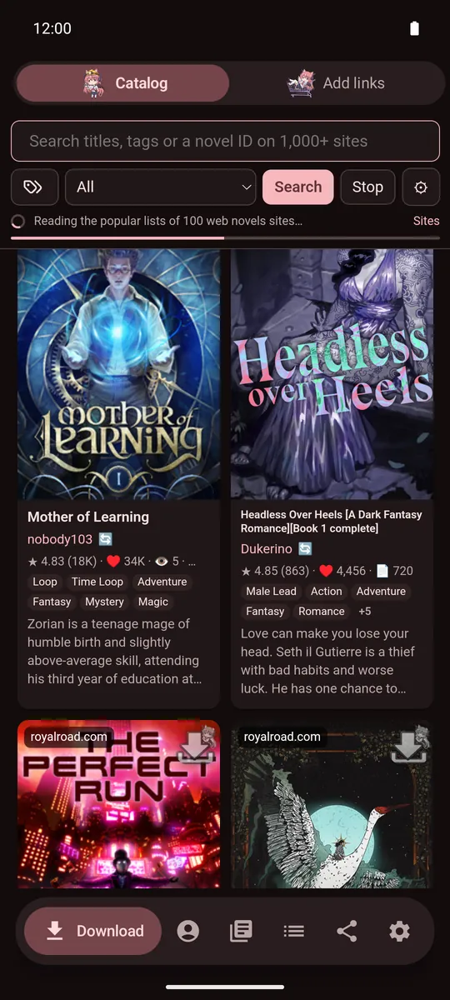
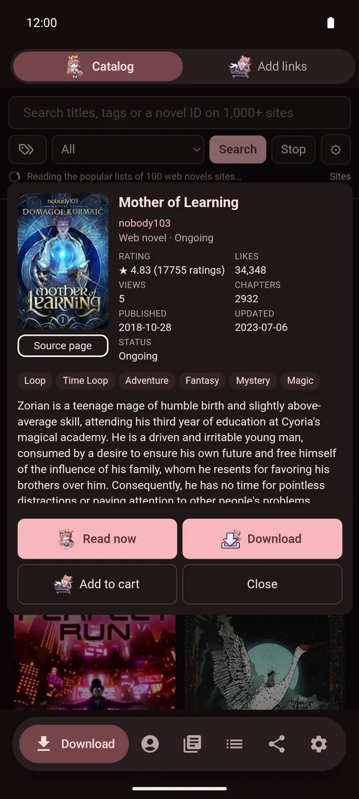
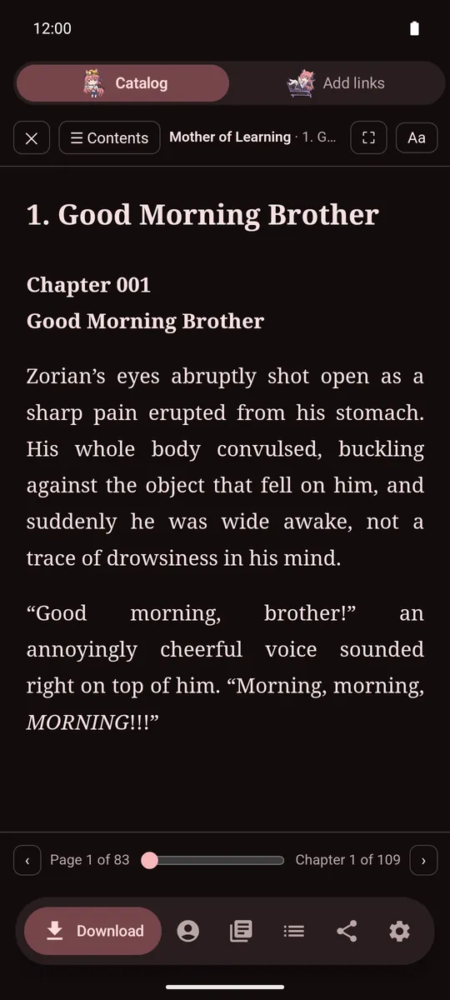
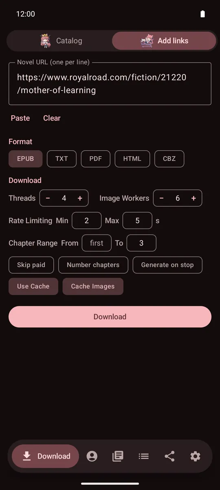
Read before you download
Tap a book in the Catalog to read it straight away, add it to the cart, or download a chapter range. Share a link from your browser to NovelDB to queue it.
Sign in where it counts
npia login, and Enter App for sfc, qdn and rbooks: sign in once in the app's own browser and downloads use those sessions. Chapters you have not bought are never bypassed.
Updates itself
Android checks the releases once a day and installs a verified APK after you confirm. On iOS the verified IPA goes to the share sheet for SideStore, AltStore and similar tools.
Three site engines, tried in turn.
Each link goes through the engines until one finds chapters. Drag them into another order or switch one off in Settings › Site engines.
Built-in scrapers
The app's own code for the sites it knows best, including npia, kpage, sfc, qdn, rbooks and floo, with your saved sign-ins.
novel-downloader rules
The rule engine from the novel-downloader project, mostly Chinese and Japanese sites, updated daily from the engines release.
WebToEpub parsers
650+ parsers, mostly English translation sites. Updates are checked against their SHA-256 and only used after they load.
Get NovelDB
Every build comes from GitHub Releases with SHA-256 checksums, and the apps offer updates from there.
Windows
Windows 10/11, 64-bit. SmartScreen may warn about an unknown publisher: choose More info › Run anyway.
macOS
macOS 13+, Apple silicon or Intel. Not notarised: the first time, right-click the app and choose Open.
Linux
x86_64 AppImage, glibc 2.35+ (Ubuntu 22.04+). chmod +x it and run; needs FUSE 2.
Android
One universal APK. Allow installs from your browser or file manager when Android asks.
iOS
An unsigned IPA to sideload with SideStore, AltStore or a similar tool.
From source
Install requirements-full.txt and run python noveldb_app.py. Build with scripts/build_desktop.py.
| Desktop build | What it includes | Pick it when |
|---|---|---|
| Full | A bundled Chromium for browser-based sources and Enter Browser, plus the embedded Catalog | You want every source to work |
| Lite | The embedded Catalog and Google sign-in, no bundled Chromium | You only use sources that need no browser |
| TurboLite | No browser engine; the Catalog opens in your own browser | You want the smallest, fastest download |
Search over a million novel listings in your browser.
The NovelDB website indexes metadata from eight catalogs, with English titles, tags, synopses and rankings, and links back to each original page. The apps' Catalog reads the same index.